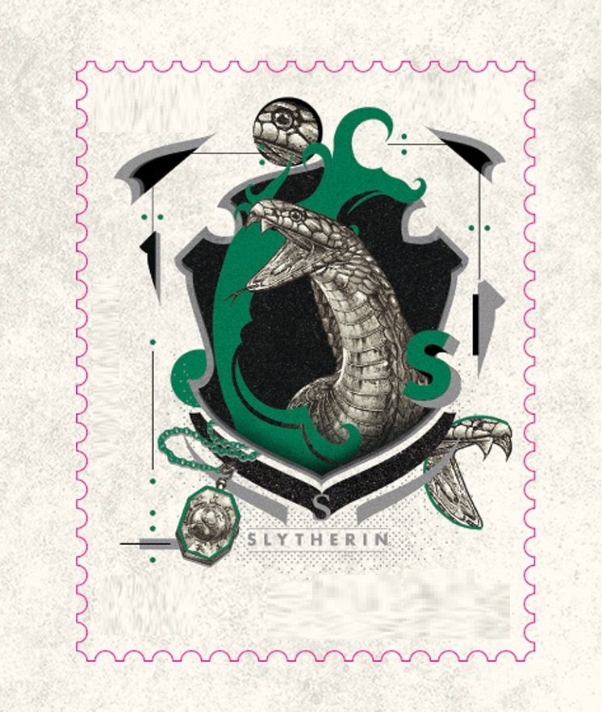

Personagens Principais
História Sonserina
Nome em inglês: Slyythrin
Criador por: Salazer Slytherin
Animal símbolo: Cobra
Fantasma: Barão Sangrento
Membros mais conhecidos são: Severus Snape, Lord Voldemort, Tom Riddle, Draco Malfoy, Lucio Malfoy, Dolores Umbridge e outros.
História: Sonserina é a Casa com a pior reputação. Parte dessa fama é, de certa forma, justificável, já que ela abrigou alguns dos maiores bruxos das trevas enquanto ainda eram estudantes. Entretanto, muitos de seus membros têm boas qualidades que redimem a má fama, o que os torna grandes alunos e líderes natos.